| QAA Algorithm Specification |
|
The Quasi-Analytical Algorithm (QAA) was developed to derive the absorption and backscattering coefficients by inverting the spectral
remote-sensing reflectance (Rrs(λ)). The Quasi-Analytical Algorithm is in general a 10 step process. Following the significant
equations for each step are depicted.
The algorithm itself is described in more detail in a journal paper and the changes made during a major update to the algorithm are described
in a second paper.
Since version 1.4 the processor is able to compute water clarity. Which is also described in one of the following papers.
MERIS spectral wavelength
| Band 1 | Band 2 | Band 3 | Band 4 | Band 5 | Band 6 | Band 7 |
|---|---|---|---|---|---|---|
| 412nm | 443nm | 490nm | 510nm | 560nm | 620nm | 670nm |
IOPs
| 412 | 443 | 490 | 510 | 560 | 620 | 670 | |
|---|---|---|---|---|---|---|---|
| aw | 0.00469 | 0.00721 | 0.015 | 0.0325 | 0.0619 | 0.2755 | 0.429 |
| bbw | 0.003328 | 0.0023885 | 0.001549 | 0.0012992 | 0.0008994 | 0.0005996 | 0.0004368 |
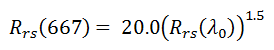
Lower Limit for Rrs(667)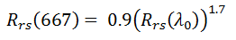
If no valid Rrs(667) exist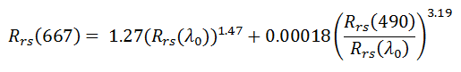
Calculation of remote-sensing reflectance spectra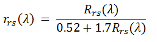
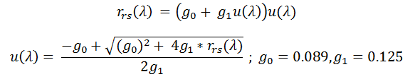
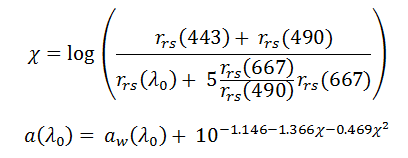
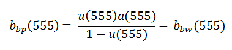

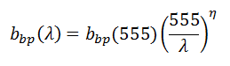
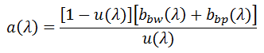
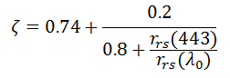
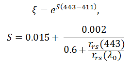
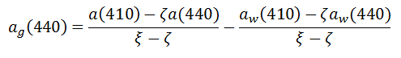
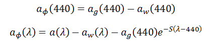